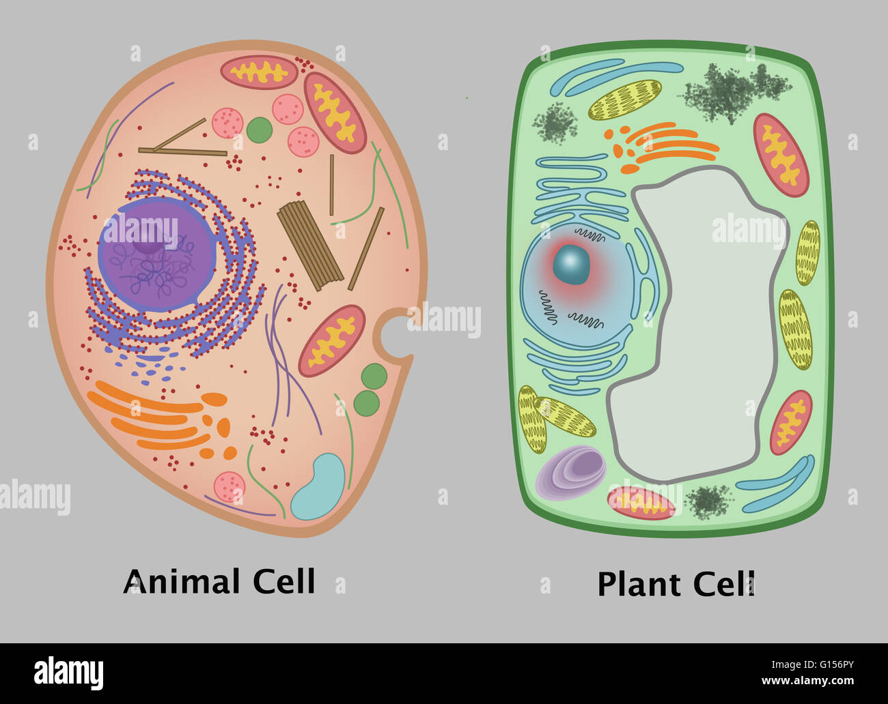

CÉLULA ANIMAL Y VEGETAL

La célula animal y vegetal son células eucariotas, es decir, son células que tienen núcleo a diferencia de las procariotas que no tienen núcleo ni la mayoría de los orgánulos.
La célula animal y vegetal son células eucariotas, es decir, son células que tienen núcleo a diferencia de las procariotas que no tienen núcleo ni la mayoría de los orgánulos.